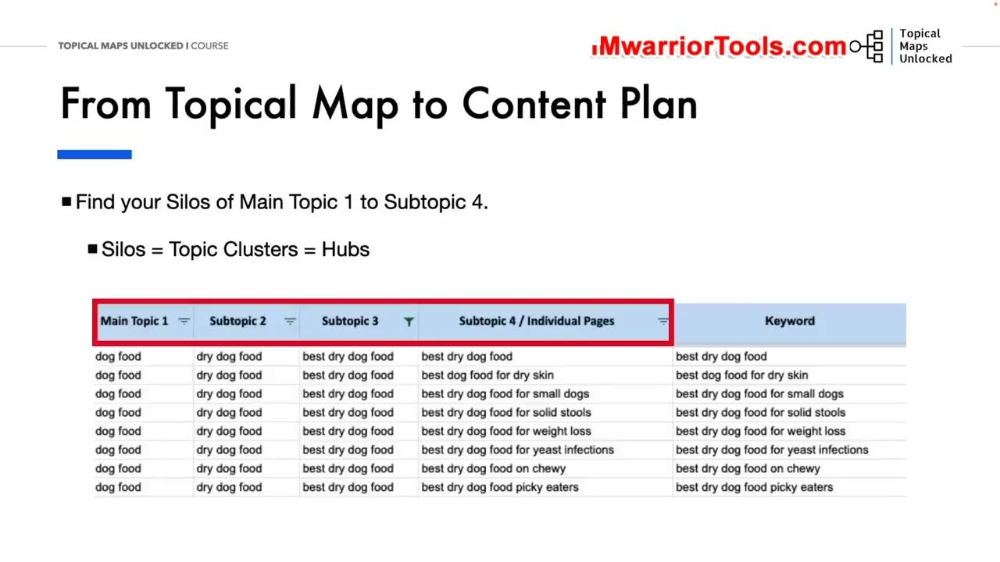
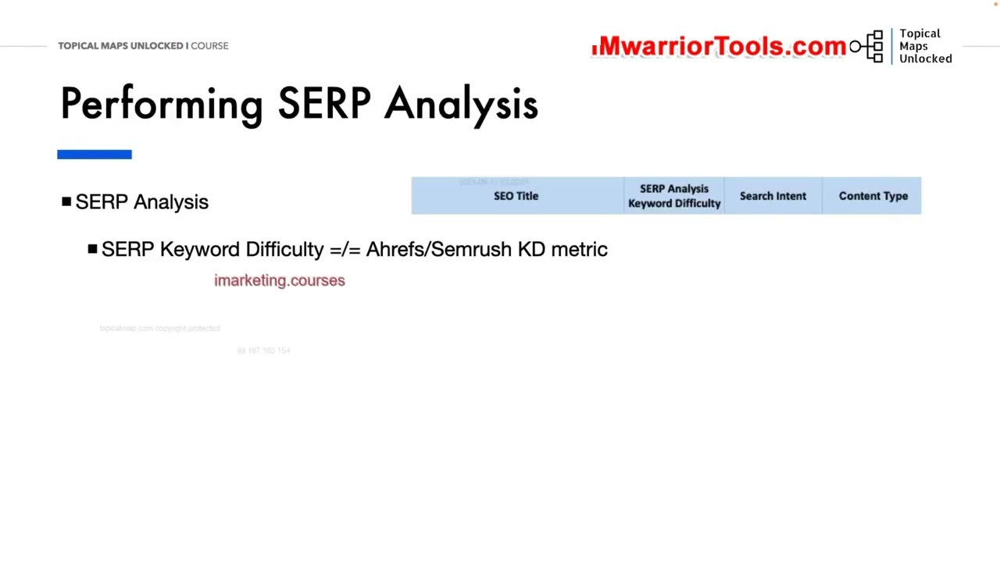
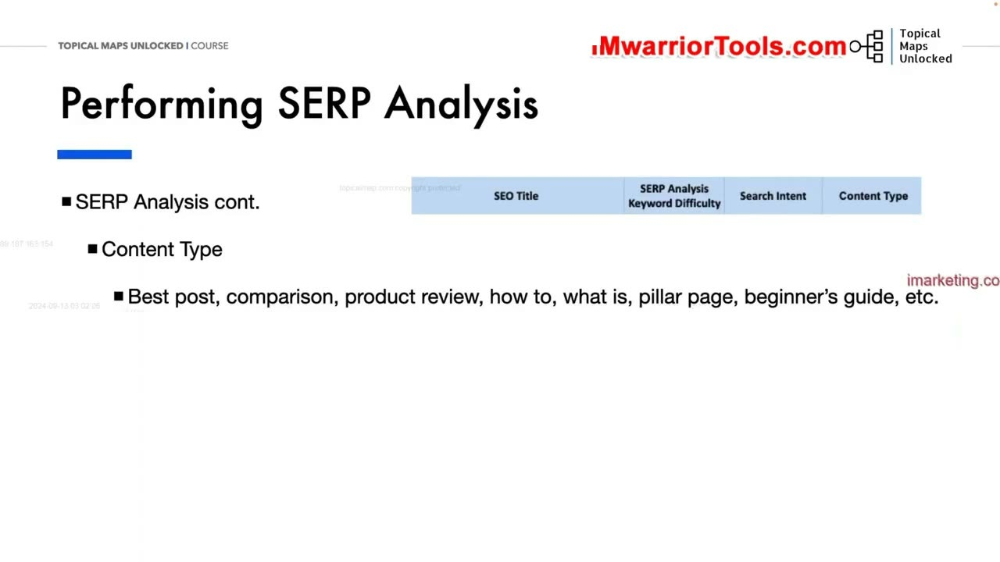

From Topical Map to Content Plan
1. Chuyển hóa cấu trúc Topical Map thành các Silo nội dung thực tế
Trong bài học này, chúng ta đi sâu vào thao tác kỹ thuật chuyển dịch trực tiếp từ bản thiết kế kiến trúc Topical Map sang bản kế hoạch tác nghiệp Content Plan.
Một kế hoạch nội dung chi tiết sẽ giúp bạn hiện thực hóa toàn bộ các ý tưởng nghiên cứu thành những bài viết cụ thể có khả năng xếp hạng cao.
Nguyên tắc cốt lõi: Mỗi Main Topic 1 (Chủ đề chính) hoặc Subtopic 2 lớn chính là một Silo nội dung (hoặc Topic Cluster / Hub). Trong cấu trúc bảng tính, toàn bộ các cột từ Main Topic 1 đến Subtopic 3 định hình khung xương phân cấp của Silo, trong khi mỗi Subtopic 4 độc nhất chính là một Trang bài viết riêng lẻ (Page) cần phải sản xuất.
Việc hiểu rõ ranh giới của từng Silo giúp bạn phân bổ nguồn lực viết bài tập trung, ngăn ngừa tình trạng nội dung bị xé lẻ hoặc chồng chéo lẫn nhau giữa các chuyên mục. Khi các bài viết được nhóm chặt chẽ theo từng Silo, dòng chảy thẩm quyền chuyên môn sẽ được tích lũy tối đa.

2. Thực hiện phân tích SERP nâng cao cho từng Subtopic 4
Trước khi giao bài cho người viết, người quản lý nội dung bắt buộc phải thực hiện bước Phân tích SERP (SERP Analysis) cho từng bài viết Subtopic 4:
- Đánh giá độ khó thực tế (SERP Keyword Difficulty): Quan sát trực tiếp xem trang nhất Google có nhiều điểm yếu (diễn đàn Reddit/Quora hay website DA thấp) hay không, thay vì chỉ tin vào các con số KD tính toán cứng nhắc của các công cụ bên ngoài. Nhờ đó, bạn sẽ biết bài viết này có khả năng lên Top nhanh hay cần đầu tư nhiều công sức hơn để cạnh tranh với các đối thủ sừng sỏ.
- Xác định ý định tìm kiếm chính xác (Search Intent): Phân loại rành mạch xem người dùng đang tìm kiếm thông tin cẩm nang (Informational), so sánh cân nhắc (Commercial) hay mua sắm trực tiếp (Transactional). Các từ khóa điều hướng tìm cửa hàng địa phương (như near me, login) sẽ được chủ động loại trừ để tránh lãng phí bài viết không cần thiết.
Phân tích SERP giúp bạn bám sát 100% những gì Google đang thực sự ưu tiên hiển thị, bảo đảm bài viết khi xuất bản ra sẽ đáp ứng trúng đích kỳ vọng của thuật toán và giải quyết triệt để nhu cầu tìm kiếm của người đọc.

3. Quyết định Định dạng nội dung (Content Type) và Đặt tiêu đề tối ưu SEO
Sau khi thấu hiểu SERP, hai trường dữ liệu cuối cùng được điền vào kế hoạch nội dung:
- Content Type (Loại nội dung cần viết): Xác định thể loại bài viết phù hợp nhất với những gì Google đang ưu tiên xếp hạng: Bài tổng hợp sản phẩm tốt nhất (Best post), Bài đánh giá chi tiết (Product Review), Bài so sánh đối đầu (Comparison), Bài hướng dẫn từng bước (How-to guide) hay Trang trụ cột chuyên sâu (Pillar page).
- SEO Draft Title (Tiêu đề SEO nháp): Soạn thảo sẵn một tiêu đề H1 hấp dẫn, chuẩn SEO dựa trên phân tích các tiêu đề đang dẫn đầu SERP (ví dụ: "Best Dry Dog Food Options for Small Dogs (2024 Guide)").
Bản kế hoạch nội dung với đầy đủ các trường thông tin này sẽ trở thành một bản hướng dẫn viết bài (Content Brief) hoàn hảo giúp các cây bút viết đúng trọng tâm ngay từ bản thảo đầu tiên.
Điều này giúp tiết kiệm tối đa thời gian biên tập và sửa chữa sau này, đồng thời tạo ra một quy trình sản xuất nội dung đồng bộ và chuyên nghiệp cho toàn bộ dự án.

Nguồn và đối chiếu
- Topical Maps Unlocked 2.0 · 04-From Topical Map to Content Plan (Video bài học chính).
- Bản tiếng Anh không có video riêng cho bài học này; nội dung đối chiếu trực tiếp từ slide và video chính.